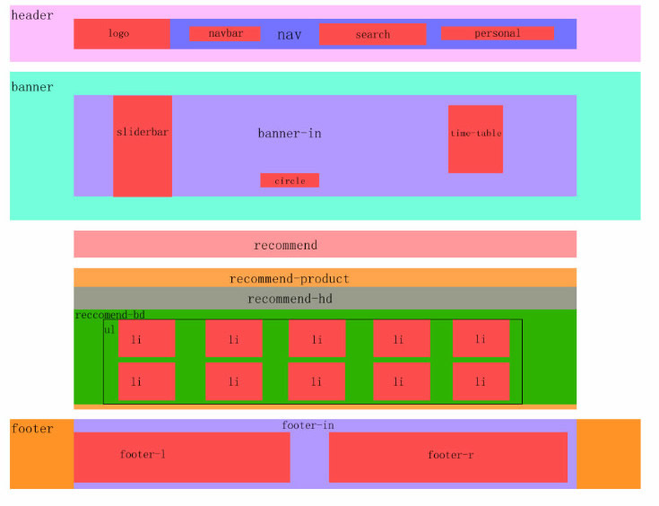

下图为整体布局图，header是通栏（不设宽度），整个nav设置宽度，并且实际比下图更宽,宽到header两边（比版心宽166px即1366px）设计稿的nav部分先调为<=自己电脑的1366px。

1、CSS初始化，确定版心。
量header（通栏）的高度，量nav（导航链接）的宽高和上外边距，都使用bgc显示。
注意：外边距合并（嵌套块垂直外边距合并）。
/*通栏开始*/
header{
height: 100px;/*量整个通栏的高*/
/*background-color: pink;*/
overflow: hidden;/*防止嵌套块导航块与通栏的上外边距合并*/
}
2、logo和navbar不需要宽（靠内容撑开宽度），调好左距离。
注意：logo左浮动。
navbar是横向导航链接栏——用<ul>和<li><a>做，这样没有缝隙。
navbar和li都要使用左浮动（否则有高度塌陷和文字无法横排的问题）。
navbar与logo同高，<a>文字垂直居中。
调导航链接栏<li>之间的距离。（即<a>文字之间的距离）

.navbar{
float: left;/*作用：如果没有float: left ，.navbar会被<li>的浮动造成高度塌陷，height和margin-left都对子元素无效*/
height: 42px;
line-height: 42px;/*height与line-height使<li>的文字垂直居中，其实只用line-height就行，line-height可以继承*/
margin-left: 53px;/*量导航栏与logo的距离*/
}
.navbar li a{
display: block；
height: 40px;/*<a>元素变成块级元素，给<a>高度是为了在光标悬浮时放置（显示）好蓝色下边框的位置*/
padding: 0 8px;/*上下内边距 0 左右内边距 8
撑开链接悬浮下方的蓝色下边框的宽，使得它自适应永远比文字宽*/
}
3、search需要宽高，边框显示搜索框，调好左距离。输入框input的type="text"使用bgc显示。搜索图标使用input的type="submit"实现（不要value值，是个背景background颜色加图）

注意：search框右浮动，search框里两个input左浮动，给定两个input宽高刚好等于search搜索框。
search input[type="text"]{
width: 360px;/*量空白文本宽高*/
height: 40px;
padding-left: 30px;/*使文字与空白文本框有距离*/
float:left;/*input是inline-block元素虽然可以一行但有间隙，使用浮动让一行的两个input元素没有间隙*/
}
/*去除input文本框默认边框样式*/
input{
border: none;/*所有表单input没有边框*/
box-sizing: border-box;/*防止空白文本框text的padding-left等宽度超过父元素造成submit的搜索图换行*/
}
4、个人中心personal不需要宽度（靠内容撑开宽度），调好个人中心和图像的左右距离。使头像与文字中间对齐。

注意：personal右浮动，personal里使用<a>包裹图片和文字，文字垂直居中。CSS会根据HTML决定search和personal谁先浮动。
.personal{
height: 42px;/*高度与通栏高度一致*/
line-height: 42px;/*文字垂直居中*/
margin: 0 100px 0 27px;/*左右距离：上 右100 下 左27*/
float: right;/*需要把个人中心的结构换到搜索框的结构上才能使个人中心先右浮动*/
}
.personal img[src*="remind"]{
margin: 0 20px;/*第一个图像左右距离20px*/
}
.personal img[src*="avatar"]{
margin: 0 5px 0 0;/*第二个图像右距离5px*/
vertical-align: middle;/*图像与文字垂直居中*/
}
5、图层置顶：切出版心宽的banner-in图片（版心container给宽）。左侧边栏：

注意：sliderbar需要宽高，贴住版心左侧，左浮动。使用<ul>和<li><a>（<li>无浮动会自动竖排）。
左右padding对文字和箭头即可拉开左右距离，line-height撑开高度并垂直居中即可拉开上下距离。
对箭头加<span>和右浮动。箭头给定字体为arial，使它不那么粗。
.slidebar li a{
color: #fff;
padding: 0 20px;/*使文字的左边和符号的右边距离都为20px*/
font-size: 14px;/*量<a>文字的大小*/
display: block;/*使行内元素<a>可以给定高度*/
height: 45px;/*这行不用写也可以*/
line-height: 45px;/*量出一行文字的底边与第二行文字的底边。作用：撑开文字的上下距离，使每个单行文字垂直居中，并且给单行文字一个固定高度*/
}
.slidebar a span{
float: right;/*拉开符号与文字的距离，使符号>往右边缘靠*/
font-family: arial;/*一般给定符号字体为arial，使它不那么粗*/
}
扩展：
.box{
width: 200px;
height: 200px;
border: 1px solid #000;
margin: 100px;
transform: rotate(45deg);
border-left: none;
border-bottom: none;
}
<body>
<div class="box">
</div>
</body>
定位配合边框实现三角形：
.box{
width: 0px;
height: 0px;
border-top: 100px solid transparent;
border-right: 100px solid transparent;
border-bottom: 100px solid transparent;
border-left: 100px solid aqua;
margin: 100px;
}
.box2{
position: absolute;
top: 0px;
left: 3px;
border-left: 100px solid #fff;
}
<body>
<div class="box">
</div>
<div class="box box2">
</div>
</body>
CSS3属性+flex布局实现箭头
.arrow{
display: flex;
/* 利用flex伸缩布局把小箭头贴在最右侧 垂直居中显示 */
justify-content: space-between;
align-items: center;
padding-right: 10rpx;
}
.arrow::after{
content:'';
width: 20rpx;
height: 20rpx;
border: 1rpx solid #aaa;
transform: rotate(45deg);
border-left: 0;
border-bottom: 0;
}
<view class='block'>
<view class='arrow'>常见问题</view>
<view class='arrow'>使用条款</view>
<view class='arrow'>隐私权政策</view>
<view class='arrow'>联系客服</view>
</view>
6、小课表


.timetable dd{
width: 193px;/*量每个dd的两行文字的宽高*/
height: 60px;
background-color: #fff;
margin: 0 auto;/*所有dd水平居中*/
padding-top: 12px;/*，量第二个dd继续学习文字上方的留白距离*/
box-sizing: border-box;/*将padding-top包含在height里*/
border-bottom: 1px solid #ccc;
}
.timetable dd:nth-child(n+4){
border: none;/*第三个dd和第四个dd无底边框*/
}
注意： 使用<div>或<dl><dt><dd>。第一行文字使用<h2>，第二行文字使用<p>。
.timetable需要宽高与banner的上外边距，右浮动。
<dt>不需要宽度， <dt>不用<a>链接，最后一个<dd>（全部课程）像a链接按钮那样做。
<dt>与<dd>有没有外边距（需要根据边距等进行测量计算）。
所有<dd>测宽高并margin: 0 auto;/*所有dd水平居中*/
padding-top: 12px;/*，量第二个dd继续学习文字上方的留白距离*/
box-sizing: border-box;/*将padding-top包含在height里*/
第三个<dd>和第四个<dd>（全部课程）无边框使用dd:nth-child(n+4)。因为<dt>不是dd的父元素，<dl>才是！
7、精品推荐


注意：recommend不需要宽度（版心container给宽），所有都用<a>包裹文字，最后一个（修改兴趣）右浮动。
line-height: 60px;/*使文字垂直居中*/
padding: 0 35px;/*撑开文字左右距离*/
border-right: 1px solid #ccc;/*添加灰色右边框*/
8、小圆点

注意：仅用<ul><li>,大概测量<ul>和<li>的宽高。
<ul>使用子绝父相的水平居中算法。
<li>左浮动，调整上下左右距离，border-radius。

9、精品推荐大模块
注意：.recommend-hd用剩余法测量从文字（精品推荐）顶部开始测量高度，两行文字一左浮动、一右浮动。
两行文字使用line-height<=font-size顶部对齐.recommend-hd。
<ul>用<li>设置宽高和上右margin来撑开宽高，<li>左浮动成排布局，5的倍数的li没有右外边距。
<li>里面有<img><h3><p>。<img>需要隐藏溢出。<h3>、<p>需要行高和margin-top撑开上下距离，padding限制左右距离。
.recom-bd ul li{
width: 228px;
height: 270px;/*测量每个卡片框的宽高，让参考线变为粉红色更精准*/
background-color: #fff;
overflow: hidden;/*隐藏图片的溢出*/
box-shadow: 0 4px 5px rgba(0,0,0,0.2);/*添加盒阴影*/
float: left;/*左浮动成排布局*/
margin-right: 15px;/*每个li右边隔开15px*/
margin-top: 14px;/*每个li上边隔开 14px*/
}
.recom-bd li:nth-child(5n){
margin-right: 0; /*每5的倍数的li都没有右外边距，例如第一行最后一个卡片*/
}
.recom-bd li h3,.recom-bd li p{
padding: 0 20px 0 24px;/*限制文字左右，使文字变窄左右留白*/
margin-top: 12px;/*h3,p的行高不够时需要加上外边距*/
}


10、底部


注意：footer-in用padding-top使得.footer-l、 .footer-r顶部对齐
footer-l里面有<img>、<p>、<a>，<p>测量行高，使用<br>来换行。
footer-r使用<dl>、<dt>、<dd><a>来表示，不用调距离：<dl>用宽度剩余法，<dt>、<dd>用高度剩余法。
*{
padding: 0;
margin: 0;
}
/*清除列表小圆点*/
ul{
list-style-type: none;
}
/*去除超链接默认样式*/
a{
text-decoration: none;
color: #050505;
}
/*给主体一个背景色*/
body{
background-color: #f3f5f7;
}
/*版心定宽并水平居中*/
.container{
width: 1200px;
margin: 0 auto;
}